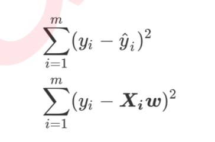
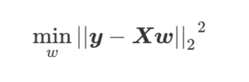
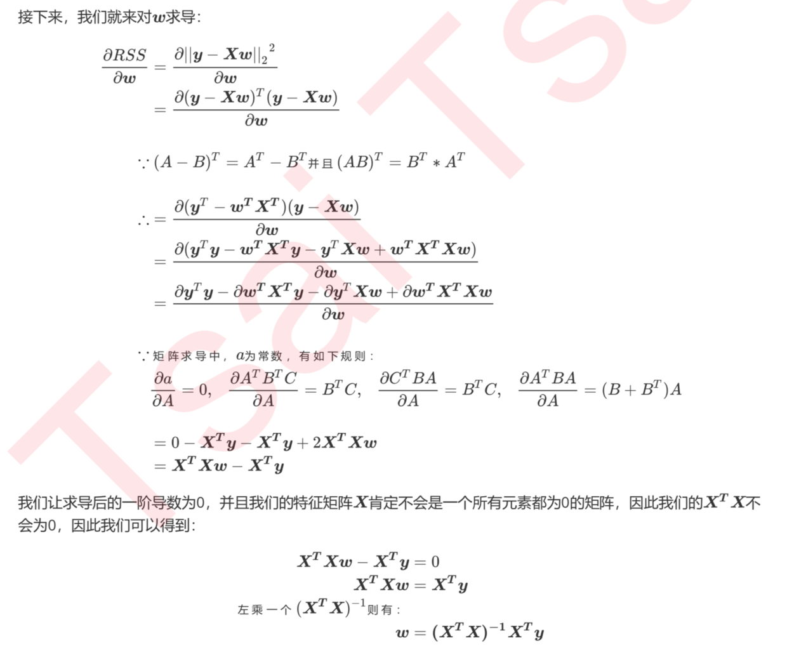
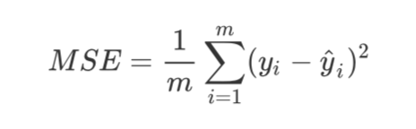
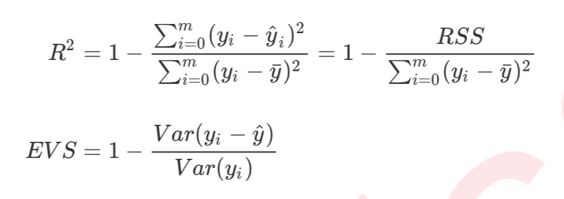

- 回归是一种应用广泛的预测建模技术，这种技术的核心在于预测的结果是连续型变量。
线性回归是机器学习中最简单的回归算法，多元线性回归指的就是一个样本有多个特征的线性回归问题。对于一个 有 个特征的样本 而言，它的回归结果可以写作一个几乎人人熟悉的方程: y = w0+w1x1+w2x2+w3x3…..+wnxn
预测函数的本质就是我们需要构建的模型，而构造预测函数的核心就是找出模型的参数向量。通过最小化损失函数或损失函数的某种变化来将求解参数向量，以此将单纯的求解问题转化为一个最优化问题。在多元线性回归中，我们的损失函数如下定义:

在这个平方结果下，我们的y和y^分别是我们的真实标签和预测值，也就是说，这个损失函数实在计算我们的真实标 签和预测值之间的距离。因此，我们认为这个损失函数衡量了我们构造的模型的预测结果和真实标签的差异，因此我们固然希望我们的预测结果和真实值差异越小越好。所以我们的求解目标就可以转化成RSS残差平方和:
最小二乘法：通过最小化真实值和预测值之间的RSS来求解参数的方法。
linear_model.LinearRegression (fit_intercept=True, normalize=False, copy_X=True, n_jobs=None)
参数：- fit_intercept：是否计算此模型的截距，默认True
- normalize： 当fit_intercept设置为False时，将忽略此参数。如果为True，则特征矩阵X在进入回归之前 将会被减去均值(中心化)并除以L2范式(缩放)。如果你希望进行标准化，请在fit数据 之前使用preprocessing模块中的标准化专用类StandardScaler。默认False
- copy_X： 默认为True 如果为真，将在X.copy()上进行操作，否则的话原本的特征矩阵X可能被线性回归影响并覆盖。
- n_jobs： 整数或者None，默认为None 用于计算的作业数。只在多标签的回归和数据量足够大的时候才生效。
属性： - coef_：线性回归方程中估计出的系数
- intercept_： 线性回归中的截距
1
2
3from sklearn.linear_model import LinearRegression as LR
reg = LR().fit(Xtrain, Ytrain)
yhat = reg.predict(Xtest)
评估
是否预测了正确的值
均方误差MSE：均方误差，本质是在RSS的基础上除以了样本总量，得到了每个样本量上的平均误差。
1
2from sklearn.metrics import mean_squared_error as MSE
MSE(y_true,y_predict)再sklearn中，均方误差是个负数，代表一种损失。
是否拟合到了足够的信息
- R^2和
可解释性方差分数(explained_variance_score，EVS)

两者都衡量 1 - 我们的模型没有捕获到的信息 量占真实标签中所带的信息量的比例，所以，两者都是越接近1越好。
注意方法参数传入的顺序。1
2
3
4
5from sklearn.metrics import r2_score r2_score(yhat,Ytest)
r2 = reg.score(Xtest,Ytest)
from sklearn.metrics import explained_variance_score as EVS
EVS(Ytest,yhat)R^2的值可能是个负数。证明模型拟合得非常糟糕